Vierzon 2009
Marines

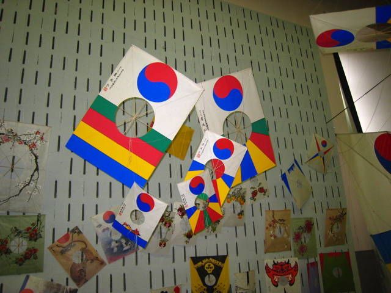
En semaine, je suis allé faire un tour à Marines (à 15 km de chez moi !) où se tenait le festival de Ludo. Bien sûr, majorité d'asiatiques, indochinois, coréens, etc...

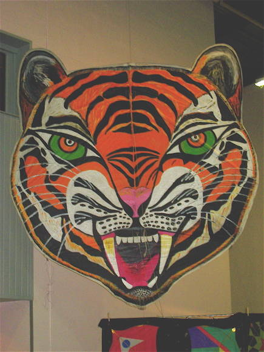
Un grand cerf-volant plat "tête de tigre" qui doit voler avec un bon paquet de queues !...

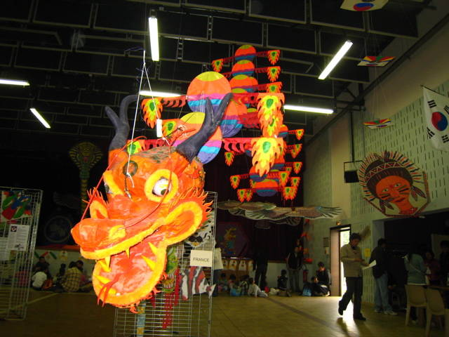
La salle est décorée d'un beau dragon presque classique. Mais pas de bouquets de plumes au bout de baguettes nues : des décorations en flammes tout au long de celles-ci...

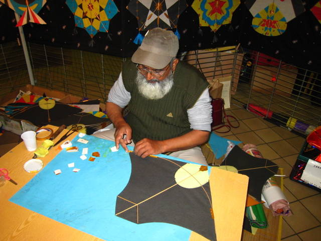
On retrouve aussi le gentil Abdul qui réalise des combattants en papier/bambou renforcés et décorés de pastilles de papiers dorés...

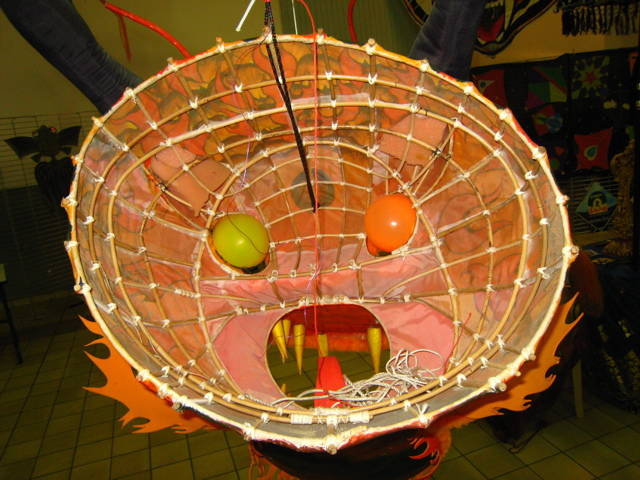
A cette hauteur, on peut admirer l'intérieur de la tête du dragon et le travail de bambou ligaturé en trame croisée et en forme...

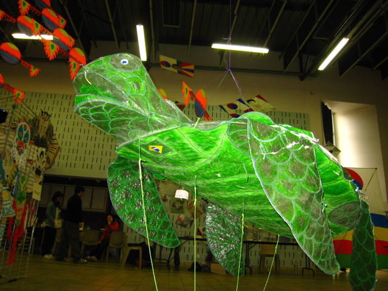
Originale, cette tortue verte brésilienne dont la carapace est en double épaisseur (dos et ventre) ! Mais je ne la verrai pas voler, j'ai un peu l'impression de déranger et il ne fait pas beau, alors je rentre chez moi me préparer pour Vierzon...
Vierzon

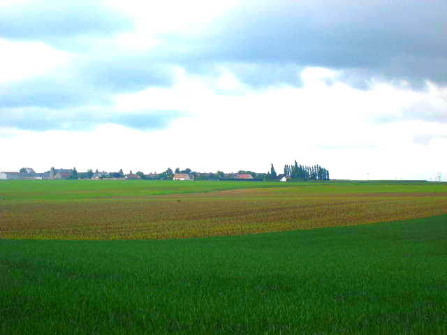
Départ vendredi, je m'arrête dans un champ pour déjeuner. Du gibier, en cette saison, un chevreuil passe pas très loin... mais un peu trop pour la photo d'identité quand même ! Il est dans le creux, au-dessous de la maison...

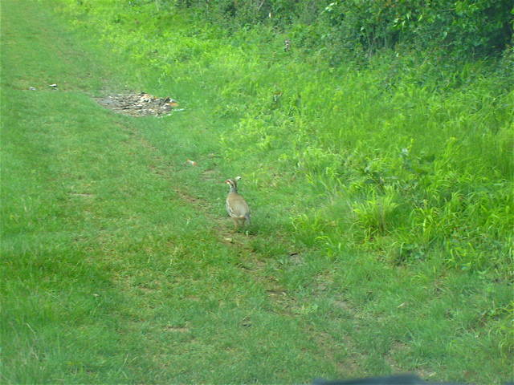
En repartant, deux perdrix m'ouvrent le chemin en piétant tranquillement à 3 m devant le fourgon !

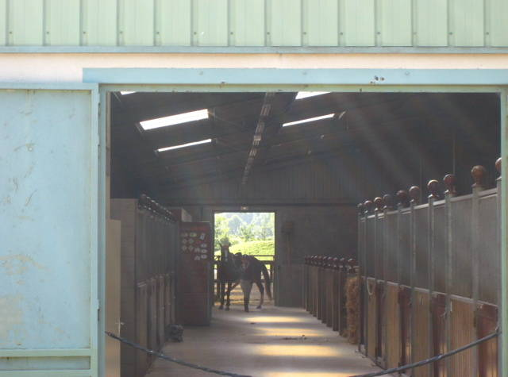
Arrivée au Centre Hippique de la Picardière, très gros centre, beaucoup de boxes (4 allées comme sur la photo), bien tenu, nickel, les chevaux ont de grands boxes et de la paille jusqu'au ventre !

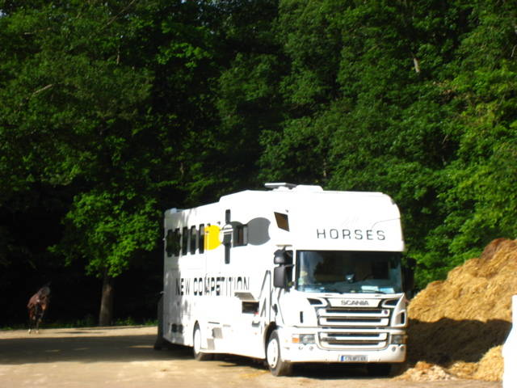
Et le camion est à la hauteur, chevaux en large avec des petites fenêtres pour voir le paysage, et belle rampe d'accès à l'arrière, sellerie et rangement prévus...

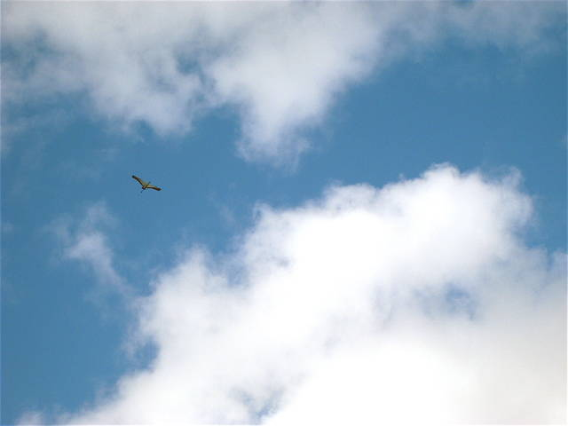
Bon, on est là pour faire du cerf-volant, il fait beau, je sors ma grue. C'est assez turbulent, mais on ne va pas se plaindre qu'il y ait du vent...

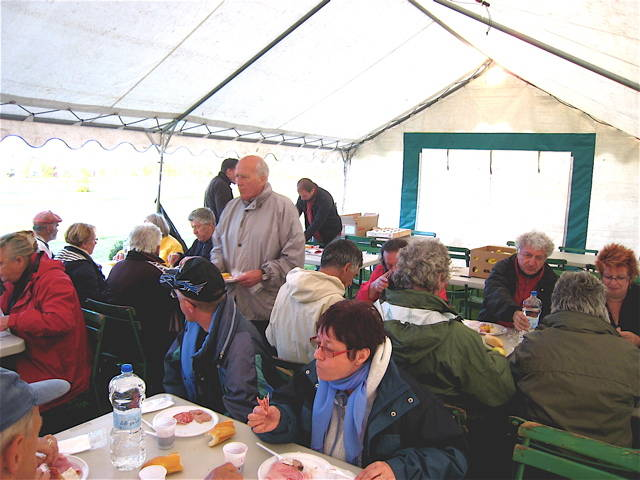
Vierzon offre aussi le dîner du vendredi soir sous la grande tente prévue à cet effet...

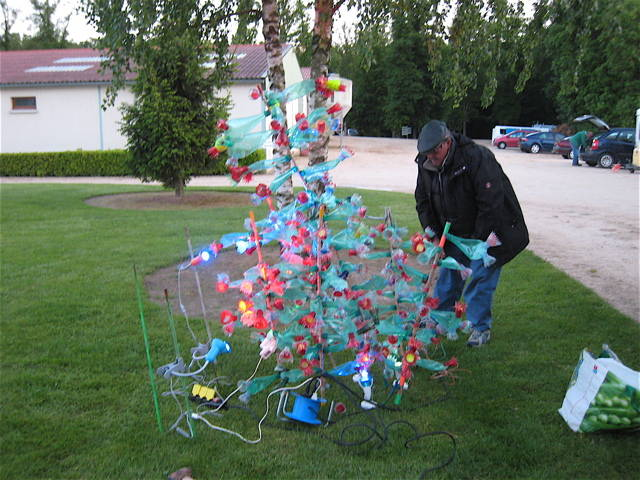
Néné a monté ses cactus et essaye le nouvel éclairage à multi-leds qu'il vient d'acheter en route ! Heureusement que Promotelec ne voit pas ça !

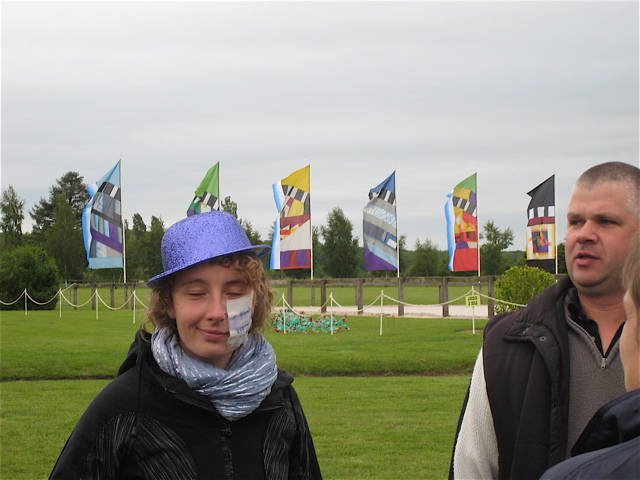
Samedi matin : Non, Olivier n'a pas cogné Anaelle, elle a reçu de la solution acide de nettoyage de la friteuse... Aïe, mais pas dans les yeux heureusement. Aux urgences pour rincer et apaiser, pansement, mais dimanche soir ça ira mieux, le pansement pourra être enlevé...

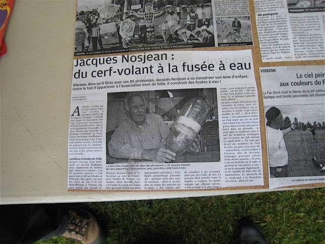
Le press-book est de taille ! Jacques Nosjean y est à l'honneur, mais fera encore cette année fonctionner ses fusées à air et à eau à plus de 85 ans !

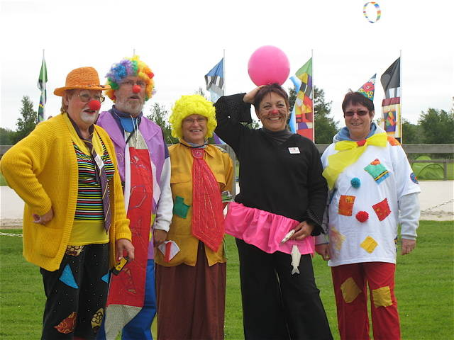
Thème cette année : le cirque. Les participants arrivent, plus ou moins déguisés, certains somptueusement, Laure est en otarie, bête de cirque s'il en est, avec sa petite jupe rose et ses poissons pour le casse-croûte ! On aurait dû faire un concours de costumes !

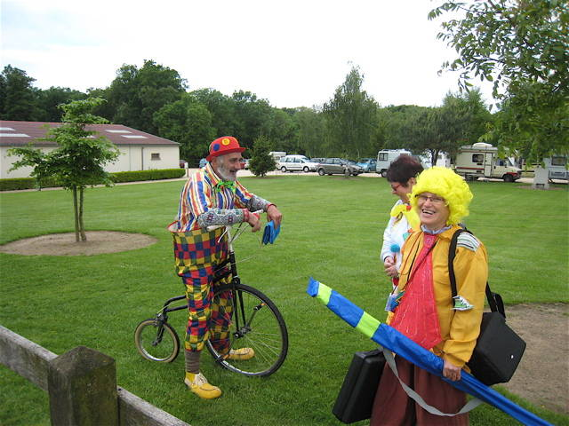
Gaby, lui, a 5 ou 6 tenues qu'il change en permanence, sans compter son vélo petit-bi, il devrait être mis hors-concours !

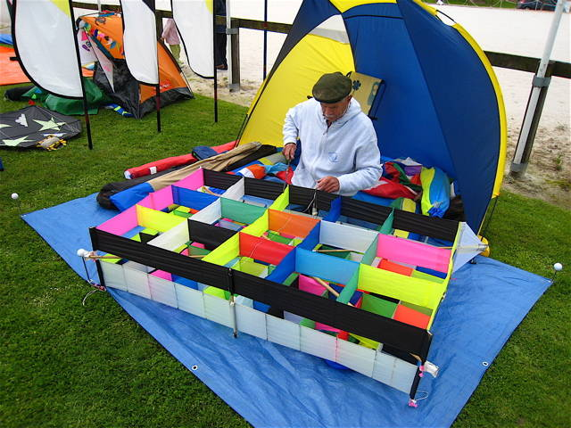
Raymond fait voler beaucoup de cerfs-volants originaux, comme ce multi-étagères rectangulaire à deux épaisseurs en bambou et spi, renforcé de barres de carbone...

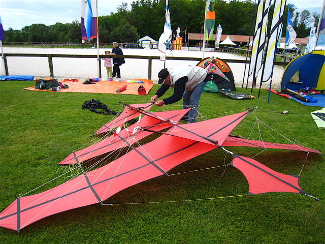
Peter Hijnen a fini de monter son multiplan, croisé de Rollo et de Cody ! Il y a un nombre de ficelles impressionnant, et toutes sont réglables !

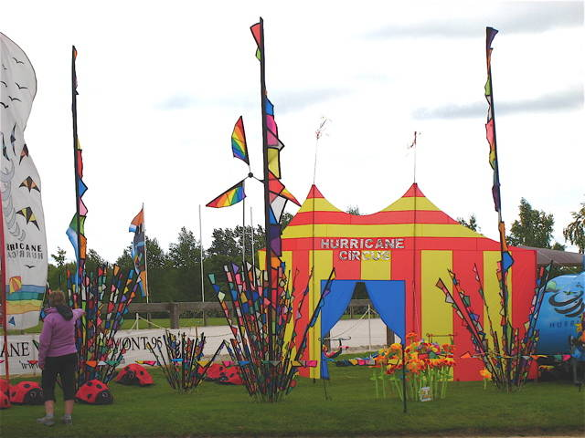
En plus de leur jardin habituel, et pour célébrer l'occasion, les Hurricane ont spécialement créé un cirque, le Hurricane Circus ! Très réussi, les gars ! On aurait dû l'admettre au concours de création !

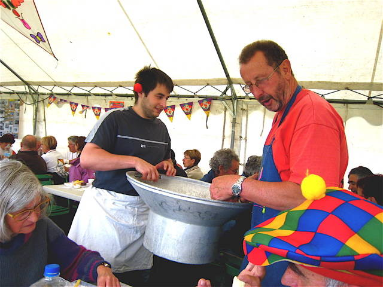
Déjeuner sous la tente. Légumes : des frites, bien sûr ! Et on n'en manquera pas, les maîtres-fritiers repassent plusieurs fois !

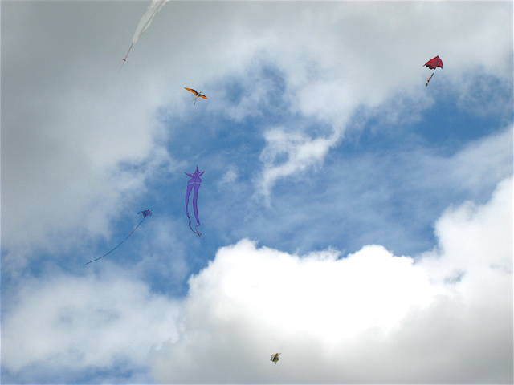
Après déjeuner, ciel encore beau, on se relance ! Admirez cette belle sterne orange et le Mega-Foly-Ang de Jean-Pierre, plus stable que les petits de Vent de Folie...

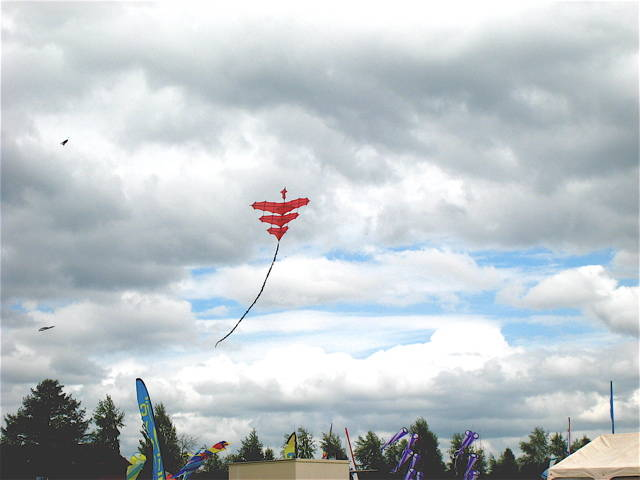
A y est, le beau cerf-volant de Peter est en vol, et très stable...

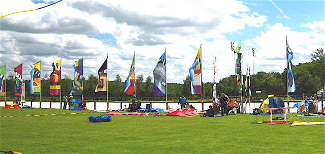
L'an dernier, Michel Gressier a vu les poteaux qui bordent la carrière du club hippique, et il a trouvé que c'était dommage de les laisser nus ! Cette année, il est venu avec des bannières de taille proportionnée à la chose, et ça fait un ensemble splendide !

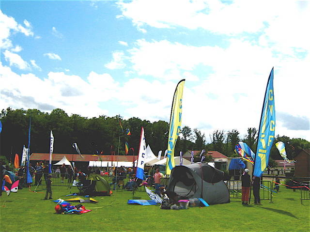
Les L'Higuinen ont encore monté leur tente et les bannières CVCF, pôle d'attraction des membres, et même des spectateurs qui viennent y demander conseil ou assistance !

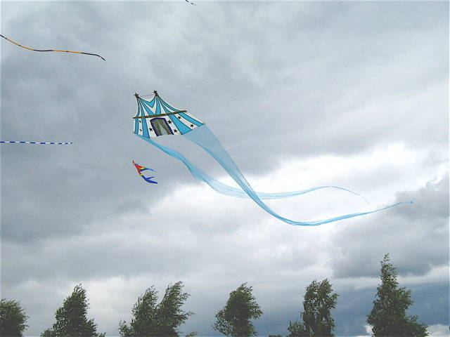
Présentation pour le concours de création, thème, bien sûr, le Cirque ! Hé bien en voilà un, de cirque, et qui vole bien. Couleurs pas assez pétantes, il n'aura pas le prix !

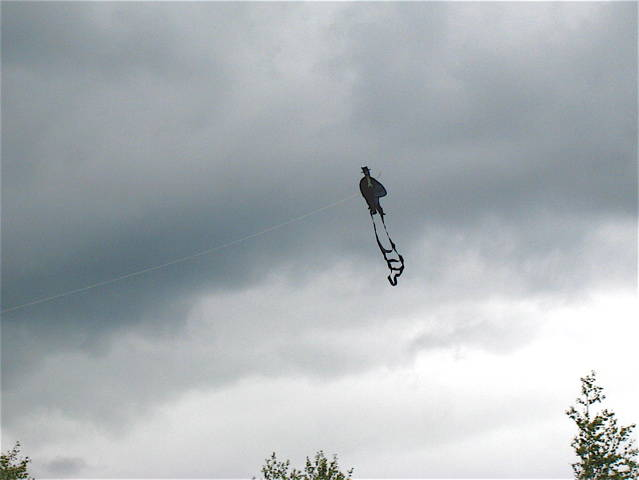
Jean-Claude Mariette a créé un prestigi, un prestitigi, enfin, un magicien, comme dit Cyril... Il est tout petit, et il lui faudrait un vent plus fort pour bien monter !

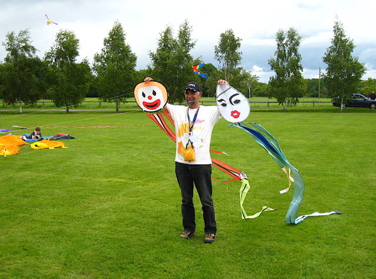
Emmanuel, lui, ne s'est pas contenté d'un clown, il en sort deux ! Eux aussi auraient bien besoin d'un peu plus de vent...

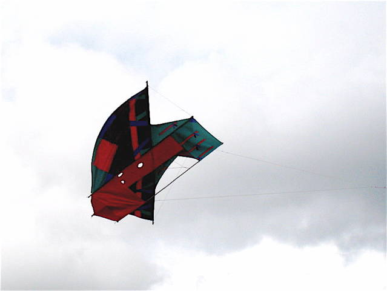
Il n'y a pas que le concours. Raymond sort un splendide météo aux couleurs très belles...

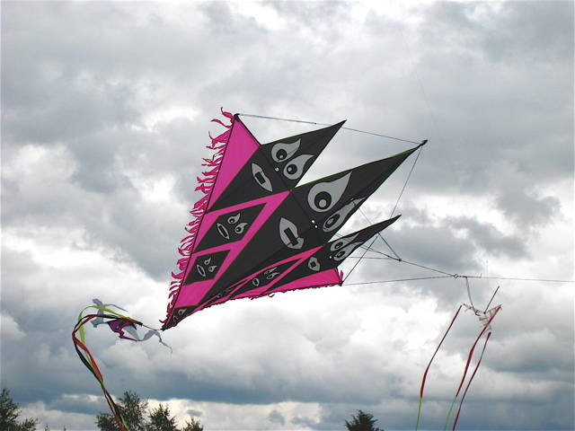
Peter a changé de monture et sorti ce cerf-volant à trois pointes...

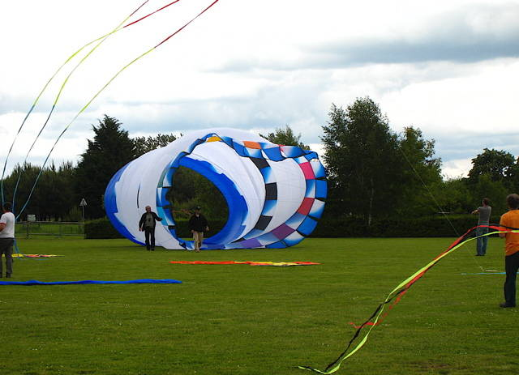
Michel Gressier, assisté de Hugo, bien sûr, a réussi à gonfler cette énorme manche à air !

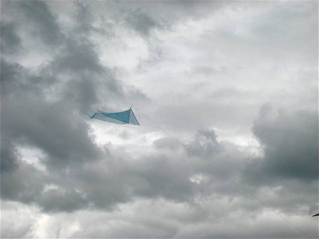
J'ai bien aimé cette décoration de ligne (à Michel ?) : un triangle portant deux voiles de tulle bleu...

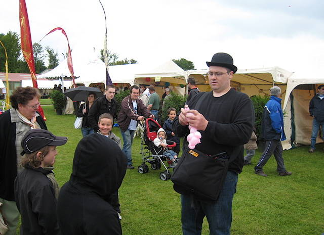
La fête est aussi animée par ce gonfleur de ballons qui en fait ce qu'il veut à la demande des enfants : caniche, chapeau, etc...

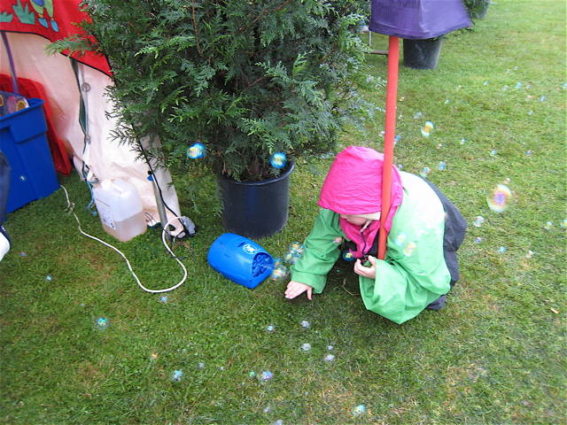
Marc Devize a monté sa boutique et mis en action un générateur de bulles qui fascine les enfants !

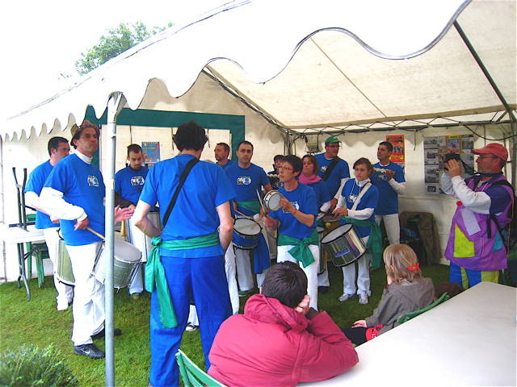
Fin de journée, après une météo plus que maussade cet après-midi, la battuta Verd'Azul vient animer l'apéritif de percussions aux rythmes forts ! Ils se mettent sous la tente, évidemment !

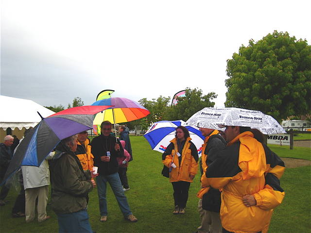
Les spectateurs s'abritent comme ils peuvent, il reste de la place sous la tente, mais certains ne résistent pas au plaisir d'exhiber leurs parapluies variés !

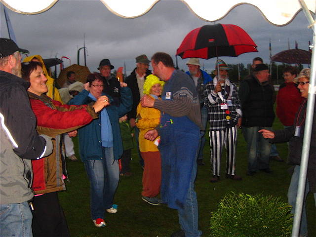
Après le dîner, la Battuta remet ça. De toute façon, il pleut par moments et le vent est complètement nul, le vol de nuit est annulé... L'ambiance est bonne quand même et les fanas se mettent à se trémousser, à danser, à farandoler...

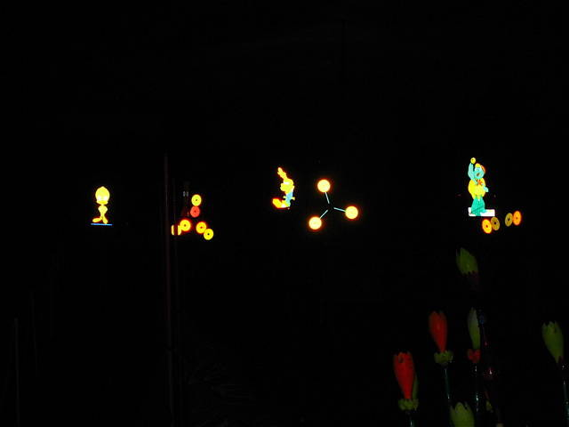
Je ferai quand même un petit vol de Harfang, mais il faut marcher pour le tenir en l'air, c'est dire ! Dans la nuit les JdVs de CDs réflectorisés de François Guzman brillent de mille feux sous le flash...

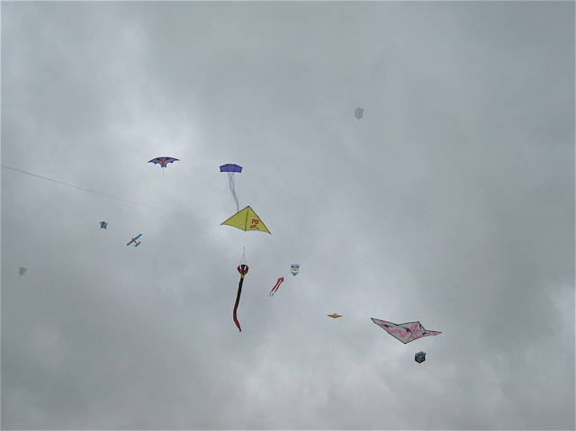
Dimanche, une fois avalé le petit-déjeuner offert, on remet en l'air, du léger quand même ! Dans l'après-midi, le vent montera pas mal, mais toujours turbulent et avec des passages plus ou moins pluvieux...

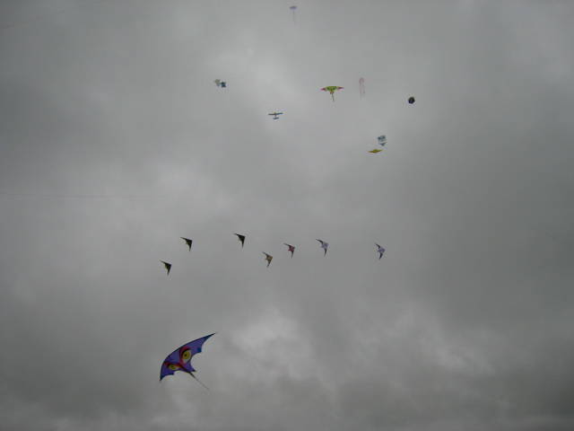
Les Sens Ciel et les Hurricane s'allient pour un petit mégateam improvisé, comme tous les mégateams...

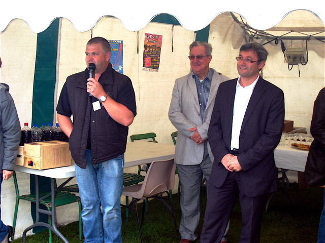
Finalement, petit discours d'Olivier, le Président de Vent de Folie, pour remercier tout le monde et en particulier le maire présent et qui a d'ailleurs bien volé, ainsi que ses enfants...

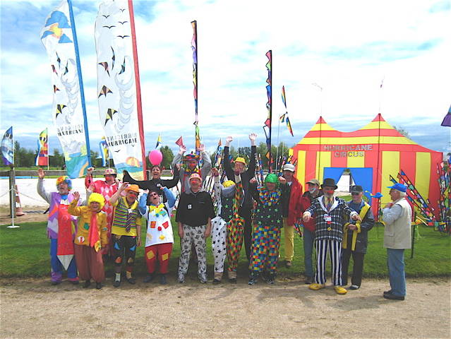
Ensuite, séances photos. D'abord, tous ceux déguisés en clown. J'irai poser un peu avec mon nez rouge derrière lequel je me cache...

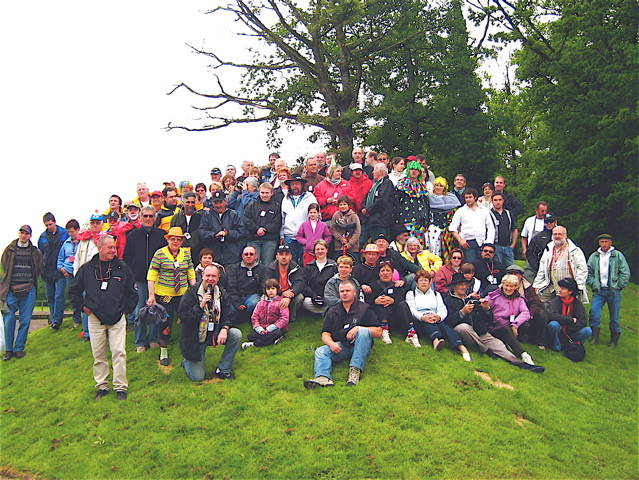
Ensuite, tout le monde, étagé sur la butte derrière les barnums...

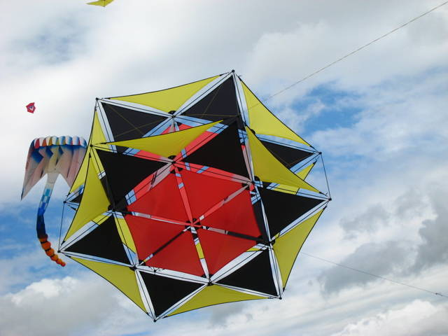
Philippe Burger monte un peu sa roue spéciale ! Plus simple que les grandes, mais, comme son autre, on peut aussi y monter des toiles carrées et le faire voler verticalement comme un flocon !

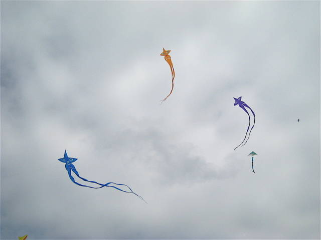
Les Foly-Angs ont fait des petits, mais beaucoup plus grands qu'eux, et censés être plus stables. En fait avec le vent capricieux, ils s'agitent pas mal quand même !

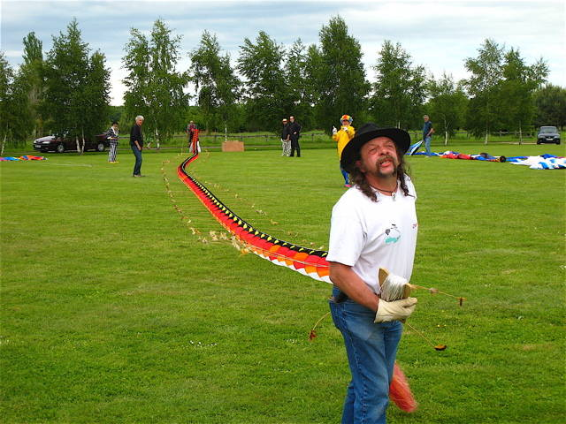
Dans une belle éclaircie, Marc se lance courageusement et déplie son dragon chinois ! Evidemment, le vent est trop faible, mais Marc est costaud et courra deux fois pour des vols courts mais très applaudis !

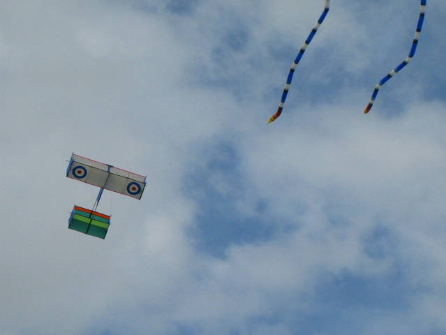
Raymond sort encore un nouveau cerf-volant, un joli avion biplan qui vole comme un vrai !

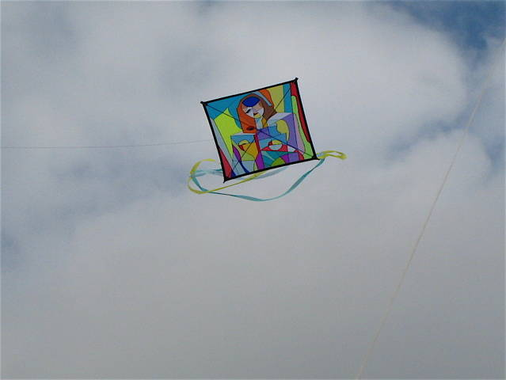
Jean Jouquet a sorti, lui, un beau carré créé pour Vulandra, copie d'une toile d'un peintre peu connu, revue et corrigée par Jean... J'en profite pour dire que la belle bannière vue à Chatelaillon est de lui, pas de l'organisation, et Art Nouveau, pas Art Déco, pardon...

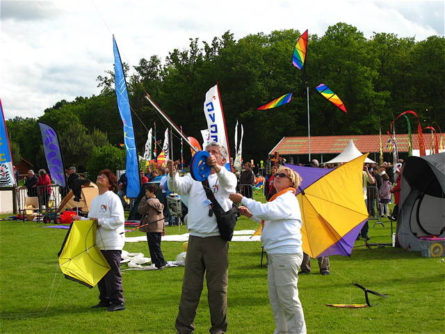
Dans les turbulences, les cerfs-volants se mêlent et se démêlent. Jean-Pierre vient s'établir au point le plus dense pour faire de la photo ! Evidemment, le résultat était prévisible, il s'emmêle aussi, s'énerve et finit par s'engu...r avec Jean-Claude Veillerobe qui a pourtant son cerf-volant au même piquet depuis le matin !

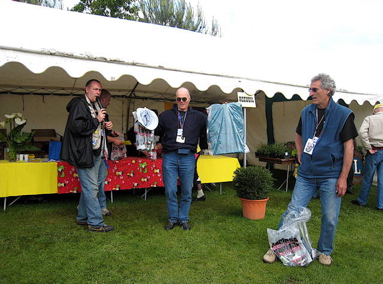
Fin d'après-midi, combat de Rokkaku. J'ai gagné celui d'hier, Jean-Claude Mariette gagne celui-ci, mais il a été mauvais hier et je garde la tête au général... Premier prix et bises, merci à tous !

C'est Jean Jouquet qui remporte le concours de création avec cette belle réalisation du cheval-éléphant, bien dans l'esprit du cirque avec en plus ce qu'il faut de clin d'oeil... Félicitations !

C'est dimanche soir, la fête est finie... Nous sommes invités à nous régaler des restes : saucisses, andouillettes, oignons frits, salades diverses, fromages, crèmes-desserts, bananes, on ne mourra pas de faim ! Pendant ce temps, les Vents de Folie ont démonté tout leur bazar, friteuses etc, sauf les barnums généreusement prêtés et montés par la municipalité...

Je dormirai là au calme, et lundi matin, départ par les petites routes dans les pittoresques forêts solognotes...

Petit arrêt près d'une église typique avec bas-côté en bois couvert... Je manque de recul sur la place pour la photo...

A midi, je vais pique-niquer dans un coin tranquille... Pas là, la décoration ne me plaît pas ! Si vous aimez une éolienne, demandez-vous si vous auriez vraiment aimé pique-niquer là ?

Comme j'ai lu des critiques sur le bruit, je vais voir au pied. Ce n'est pas vraiment gênant, sauf à habiter sur place ! Mais celle-ci est du dernier modèle avec pales pointues et courbes, dotées en outre d'un bord de fuite courbé pour éviter les tourbillons. Les anciennes étaient peut-être plus bruyantes...
Vierzon 2009 : Dommage pour le vol de nuit supprimé et les quelques gouttes d'eau qui sont tombées, mais c'était quand même un beau week-end de cerf-volant, avec un terrain remarquable et une organisation hyper-active et sympa...